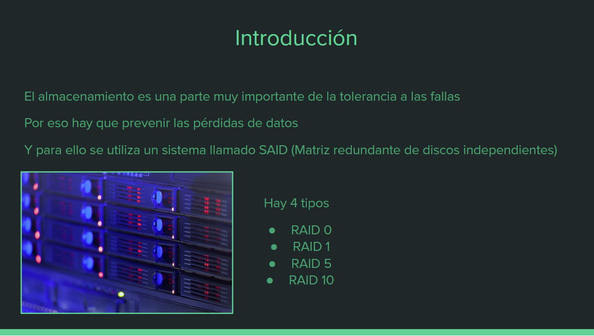
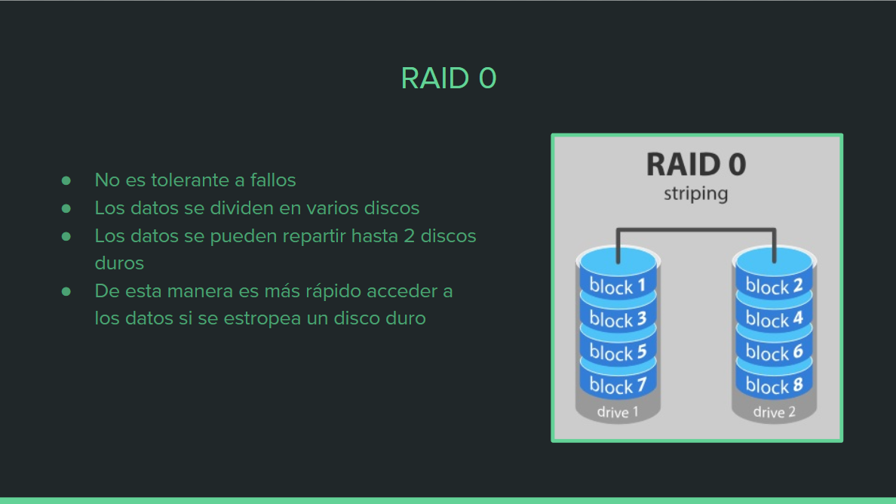
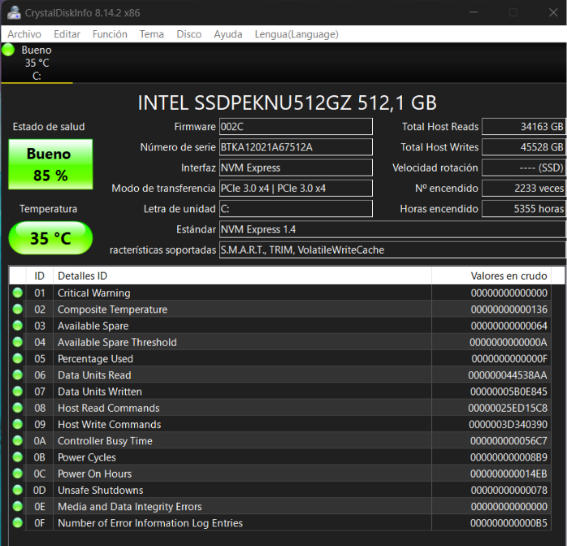

Tema 10: Discos duros (RAID)
1- Resumen RAID
1- Selecciona el mejor sistema de almacenamiento RAID de 64TB, calculando número de discos duros necesarios, precio aproximado de dicho sistema y posible plazo de tiempo sin errores. Razona la respuesta en cada caso:
Empresa A quiere máxima seguridad en la conservación de sus datos
-Utilizaria el sistema RAID 10, porque puede tolerar la pérdida de dos discos sin perder datos
tiene un mayor rendimiento porque combina el sistema de RAID 0 y RAID 10.
-Se necesitaría 16 discos duros.
-Recomiendo que los disco sean ssd porque son más rápidos y tienen menos riesgos de errores
este sería el ideal SanDisk Ultra 3D 2.5" SSD 4TB SATA 3 cuesta 405,84€ cada uno, en total serian 6.493,44€
-El RAID bien configurado y con discos duros de calidad puede dar una alta fiabilidad.
Empresa B quiere alta seguridad pero limitando el coste.
-Utilizaria el sistema RAID 5, porque tiene una buena combinación de seguridad y capacidad, puede tolerar la pérdida de un disco duro sin perder datos.
-Se necesitaría 7 discos duros.
-Este seria el disco duro ideal Seagate IronWolf, 10 TB, Disco Duro Interna HDD cuesta 268,90€ y en total son 1.882,3€.
-El RAID bien configurado y con discos duros de calidad puede dar una alta fiabilidad.
Empresa C quiere alta seguridad con la máxima velocidad posible.
Para esta empresa utilizaría el mismo sistema, la misma cantidad de discos y los mismos discos de la empresa A
Empresa D quiere seguridad media en el sistema con sistema de backup complementario (sistema 3-2-1)
-Utilizaria el sistema RAID 1, porque ofrece una alta redundancia, ya que duplica los datos en discos duros emparejados.
-Se necesitaría 4 discos duros de esta marca Seagate Exos X20 3.5" 20TB SATA3 cuesta 371,15€ en total serian 1.484,6€
-A la seguridad gracias al sistema de backup complementario garantiza una capa adicional de seguridad en caso de falla del sistema RAID.
2- Resumir que es el sistema 3-2-1:
El sistema 3-2-1 consiste en diversificar copias de seguridad o backups.
3: Significa que un disco tenga la información original y otros dos discos hagan de backups del primero.
2: Significa poner los ficheros en 2 tipos distintos de almacenamiento para protegerlos de riesgos
1: Almacenar 1 copia de seguridad y que esté fuera de nuestra oficina o casa.
3-En un curso de informática siempre se da “demasiada” teoría. ¿Qué pasaría si en la empresa de pácticas nos piden CONFIGURAR el RAID del NAS de la empresa?
1 Determine el tipo de RAID que desea implementar, como RAID 0, RAID 1, RAID 5 o RAID 10. Cada tipo ofrece diferentes niveles de rendimiento y redundancia de datos.
2 Verifique si su hardware es compatible con el RAID que desea configurar. Asegúrese de tener controladores y discos duros compatibles.
3 Prepare los discos duros que se utilizarán en el RAID. Asegúrese de que estén en buen estado y formateados correctamente.
4 Acceda a la utilidad de configuración del RAID, que puede estar disponible durante el proceso de arranque del sistema.
5 Cree un conjunto de discos seleccionando los discos duros que desea utilizar en el RAID y configure el nivel de RAID deseado.
6 Configure las opciones adicionales según el tipo de RAID seleccionado, como el tamaño del bloque y la distribución de paridad.
7 Guarde la configuración y reinicie el sistema. El sistema operativo reconocerá el RAID como un solo dispositivo de almacenamiento.
8 Inicialice y formatee el RAID a través de la utilidad de administración de discos del sistema operativo.
4-Tasa de errores
1_Tasa de error no recuperable (UNC, Unrecoverable Bit Error Rate): Indica la frecuencia esperada de errores de lectura no corregibles por el disco duro. Se mide en bits por bits leídos (por ejemplo, 1 error por cada 10^14 bits leídos).
2_Tasa de error de lectura (LER, LER/UEC, Low-Level Read Error/Unrecoverable Error Correction): Muestra la probabilidad de errores de lectura corregibles por los mecanismos internos de corrección de errores del disco duro. También se mide en bits por bits leídos.
3_Tasa de error de escritura (WER, Write Error Rate): Indica la probabilidad de errores de escritura en el disco duro.
5-Utilizar el siguiente programa y crear tabla con los datos más importantes:
6- Invertarse un ejercicio de este Tema de RAID para hacer CON chatGPT
Una empresa de diseño gráfico tiene un servidor de almacenamiento con una capacidad de 10 TB y desea implementar un sistema RAID para mejorar la seguridad y la disponibilidad de sus datos. Se te ha asignado la tarea de diseñar la configuración RAID adecuada para este caso.
El objetivo es lograr un equilibrio entre la capacidad de almacenamiento, la seguridad de los datos y la eficiencia en el acceso a los mismos.
El ejercicio consiste en lo siguiente:
1_Determina qué nivel de RAID sería el más apropiado para esta empresa y justifica tu elección.
2_Calcula el número mínimo de discos duros necesarios para implementar el RAID seleccionado.
3_Considerando que se utilizarán discos duros de 2 TB cada uno, determina cuántos discos duros serán necesarios en total.
4_Realiza un cálculo estimado del espacio de almacenamiento disponible después de implementar el sistema RAID, teniendo en cuenta la capacidad de los discos duros y la configuración RAID seleccionada.
5_Explica brevemente cómo funcionaría el sistema RAID en este caso y cómo se distribuirían los datos entre los discos duros.
6_Discute las ventajas y desventajas de la configuración RAID seleccionada, incluyendo aspectos como la tolerancia a fallos, el rendimiento y la capacidad de expansión.
Respuestas:
1_El nivel de RAID más apropiado para esta empresa sería RAID 5. Este nivel ofrece un buen equilibrio entre capacidad, rendimiento y seguridad de los datos. Utiliza la técnica de paridad distribuida, lo que significa que se distribuye la información de paridad entre todos los discos en el array. Esto proporciona redundancia de datos y permite la recuperación en caso de fallo de un disco.
2_Para implementar RAID 5, se requieren al menos 3 discos duros.
3_Considerando que se utilizarán discos duros de 2 TB cada uno, se necesitarán un total de 3 discos duros.
4_En un sistema RAID 5 con 3 discos duros de 2 TB cada uno, la capacidad total de almacenamiento disponible será de 4 TB. Esto se debe a que uno de los discos se utiliza para almacenar la paridad distribuida.
5_En el sistema RAID 5, los datos se distribuyen entre los discos duros junto con la información de paridad. Cada bloque de datos se divide en segmentos y se distribuye en los discos. La información de paridad permite reconstruir los datos en caso de fallo de uno de los discos.
6_Ventajas de RAID 5:
·Mayor seguridad de datos debido a la paridad distribuida.
·Buena capacidad de lectura y escritura, ya que los datos se distribuyen entre varios discos.
·Tolerancia a fallos, ya que se puede recuperar la información perdida si uno de los discos falla.
·Capacidad de expansión mediante la adición de discos adicionales al array.
Desventajas de RAID 5:
·Rendimiento de escritura ligeramente más bajo debido al cálculo y escritura de la paridad.
·No ofrece una protección completa contra fallos múltiples, ya que solo se puede recuperar un disco a la vez.
·Requiere un mínimo de 3 discos duros, lo que puede limitar la capacidad de expansión en comparación con otros niveles de RAID.